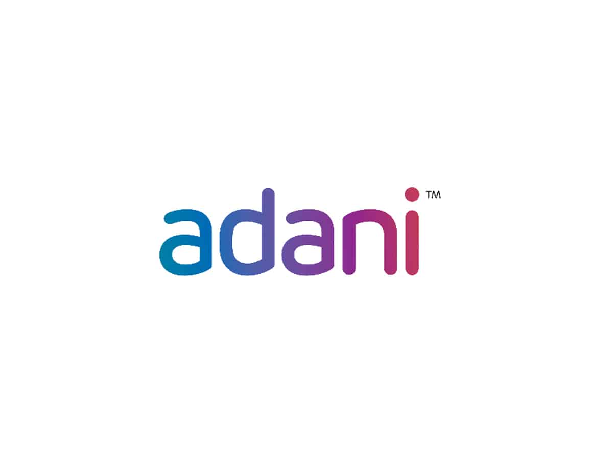
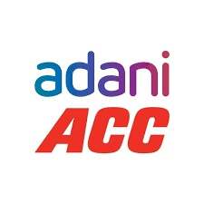
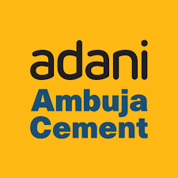
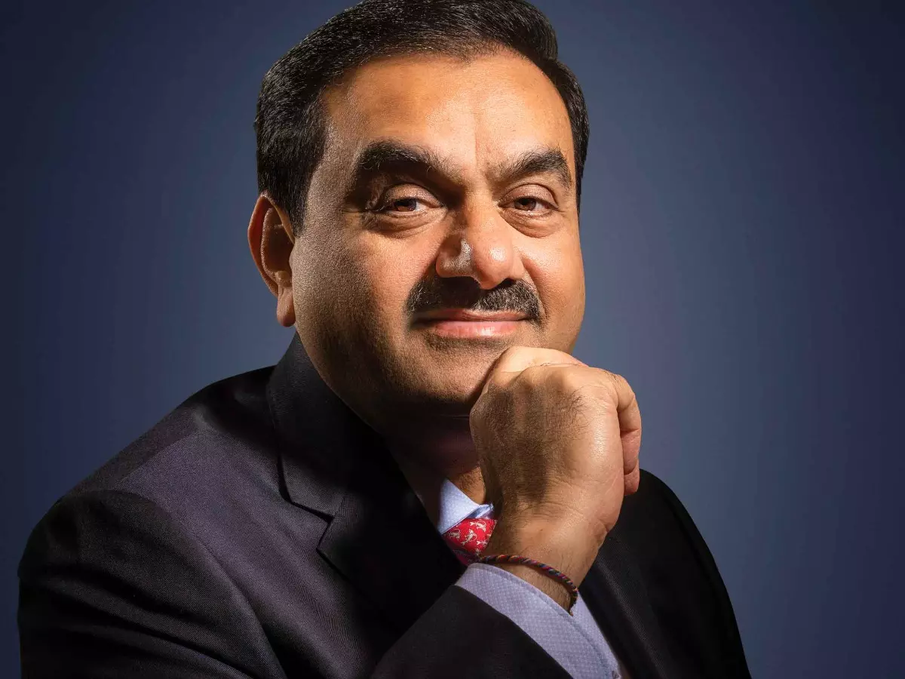
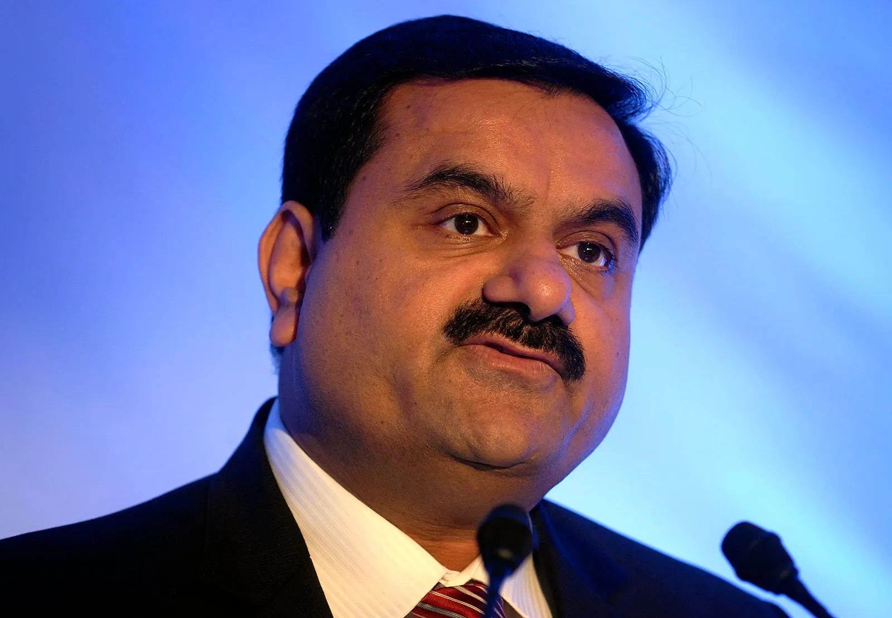

Social Listening Report · ACC · Ambuja · Orient Cement · JAL Acquisition · 2025–2026

Adani Group
ACC Cement
Ambuja Cements
Record operational results. Lowest-ever public trust. The gap is widening — and influencer activity so far has not bridged it.

Creators and influencers who have spoken about Adani Cement — how they framed it, what audience sentiment followed, and how brand content compares.
| Creator / Channel | Platform | Content Focus | Audience Sentiment | Key Narrative Pushed | Brand Presence? |
|---|---|---|---|---|---|
| BBC News Hindi ↗ | YouTube | Bihar land deal investigation | Hostile | "₹1 for 1,000 acres" — state-facilitated land grab | Absent |
| Khan Sir Uncut ↗ | YouTube | Adani vs Ambani business reality | Hostile | Crony capitalism, political patronage | Absent |
| Aditya Kakkar ↗ | YouTube | Bihar Rs1 land deal explainer | Hostile | Government-Adani nexus, 10 lakh trees cleared | Absent |
| Dhruv Rathee ↗ | YouTube | Adani Group investigations & crony capitalism | Hostile | Systematic political favouritism, Hindenburg context | Absent |
| Sansad TV / Opposition Clips ↗ | YouTube | Parliamentary debates on Adani land & contracts | Hostile | Regulatory capture, EIA exemption controversy | Absent |
| Advisory Excellence ↗ | YouTube | Adani corporate ethics & SEC case explainer | Hostile | US SEC bribery charges, governance red flags | Absent |
| Viralkarbhar ↗ | Local protest at Adani cement factory | Hostile | Community resistance, environmental concern | Absent | |
| The Wire (Instagram) ↗ | Investigative land & environmental posts | Hostile | EIA exemption, Assam land grab, NGT violations | Absent | |
| Rahul Gandhi (Twitter/X) ↗ | Twitter/X | Adani cronyism opposition messaging | Hostile | "Modani" — political patron narrative at scale | Absent |
| r/india (Reddit) ↗ | IANS takeover, land grab, general Adani threads | Hostile | Media capture, monopoly formation, land coercion | Absent | |
| r/Maharashtra (Reddit) ↗ | Kalyan plant resistance & EIA controversy | Hostile | "Everything sold to Adani" — Raj Thackeray quote viral | Absent | |
| Aditya Gautam ↗ | YouTube | Bihar ₹1 land deal — how Adani secured 1020 acres | Hostile | State land given to Adani for ₹1 — viral Shorts framing | Absent |
| Dragon's Perception ↗ | YouTube | Your house-building grows Adani's empire | Hostile | Cement purchase as political contribution — viral framing | Absent |
| INOVI TV ↗ | YouTube | Adani-Modi 1Rs land deal Bihar — scam framing Shorts | Hostile | ₹1 land + political nexus — concise hostile short format | Absent |
| Anant Cosmos ↗ | YouTube | Bihar 2400MW plant — 10 lakh trees at risk | Hostile | Environmental betrayal — orchard land, tree-felling narrative | Absent |
| Live Cities Media ↗ | YouTube | Nawada Adani cement factory — worker revolt on-ground | Hostile | Workers' bawal inside factory — local labour unrest footage | Absent |
| BBC News Marathi ↗ | YouTube | Adani cement grinding project — why Kalyan locals resist | Hostile | Community resistance, environmental concern, EIA bypass | Absent |
| HW News English ↗ | YouTube | Supriya Shrinate targets Modi over Adani Kalyan plant | Hostile | Opposition politician's Adani-Modi crony framing — Shorts | Absent |
| GPlus ↗ | YouTube | Gauhati HC judge reacts to 3000 bigha Assam land deal | Hostile | Judicial outrage amplified — "is this a joke?" framing | Absent |
| Live Law ↗ | YouTube | 3000 bighas tribal land given to cement company in Assam | Hostile | Legal angle — Gauhati HC, tribal rights, land coercion | Absent |
| SAHIL BR ↗ | YouTube | BJP gave 3000 bighas land to Adani — Shorts | Hostile | Assam land political gifting narrative — short-form viral | Absent |
| Crime Connect ↗ | YouTube | Will Gautam Adani be arrested? ₹2100 crore bribery story | Hostile | US SEC bribery case explained for mass Hindi audience | Absent |
| Adv. Akshay Samarth ↗ | YouTube | Assam BJP gave 3000 bigha tribal land to Adani cement factory | Hostile | "Modi's India sale" — tribal land gifting to cement conglomerate | Absent |
| Cobrapost ↗ | YouTube | Factcheck — Did Adani get 3000 bighas in Assam? | Hostile | Investigative factcheck — confirms controversy's factual core | Absent |
| Biz Tak ↗ | YouTube | Jewar airport — Adani got 4000 acre land at throwaway price | Hostile | Adani land-at-discount pattern narrative — recurring theme | Absent |
| CA Piyush Bafna ↗ | YouTube | ADANI vs BIRLA — cement acquisition | Skeptical | "Birla has vintage, Adani has government support" | Absent |
| Trading With Vivek ↗ | YouTube | ACC/Ambuja merger — investor view | Skeptical | Merger ratio unfair to ACC shareholders | Absent |
| CA Nikhil Nainani ↗ | YouTube | ACC equity devaluation & working capital analysis | Skeptical | ACC siphoning narrative, inter-group MSA critique | Absent |
| CA Rahul Malodia ↗ | YouTube | Birla vs Adani real estate war | Skeptical | Adani expansion as hostile takeover | Absent |
| Ankit Avasthi Insights ↗ | YouTube | Adani cement market entry explained | Skeptical | Monopoly risk, UltraTech arms race | Absent |
| Dr. Mukul Agrawal ↗ | YouTube | ACC & Orient merger — what shareholders get | Skeptical | Merger dilution, stock crash post-SEC summons | Absent |
| Rishab Jain ↗ | YouTube | Adani Cement vs Birla — cement war case study | Skeptical | Heritage usurpation, brand dilution narrative | Absent |
| Anant Ladha ↗ | YouTube | Adani debt analysis & power game | Skeptical | $3.5B refinancing risk, "80% crash" debt warnings | Absent |
| Engineer Wala Construction ↗ | YouTube | Ambuja vs UltraTech vs ACC real test results 2025 | Skeptical | Post-Adani quality drop vs legacy strength | Absent |
| Owner's Verdict ↗ | YouTube | ACC vs UltraTech vs Ambuja — best cement for plaster | Skeptical | Consumer quality doubts, Ambuja losing spec battles | Absent |
| RK Engineering ↗ | YouTube | Drop test: UltraTech Premium vs ACC F2R | Skeptical | Physical product quality comparison, contractor trust | Absent |
| Civil Ki Bat ↗ | YouTube | Adani Cement placement doubts — civil engineers | Skeptical | B2B trust erosion, working hour concerns | Absent |
| Sharan Hegde (@financewithsharan) ↗ | Personal finance & stock market for millennials | Skeptical | ACC governance risk premium, retail investor caution | Absent | |
| Lab Money Talks ↗ | Stock analysis reels — Ambuja, ACC, Orient | Skeptical | Merger ratio unfairness, working capital drain | Absent | |
| Stock Market Moti ↗ | Cement sector stock reels & merger breakdowns | Skeptical | ACC at 52-week low, "sell or hold" confusion | Absent | |
| r/IndianStockMarket (Reddit) ↗ | ACC governance risk, merger ratio analysis | Skeptical | Retail investor distrust, 50% below historic PE | Absent | |
| r/IndianStreetBets (Reddit) ↗ | Orient Cement merger ratio — "what happened?" | Skeptical | Orient at scrap value, shareholder destruction fear | Absent | |
| Nithin Kamath (Twitter/X) ↗ | Twitter/X | Retail investor financial literacy & market commentary | Skeptical | Governance risk in conglomerate stocks, retail caution | Absent |
| Wealth SaGa Global ↗ | YouTube | Why Adani is secretly buying bankrupt companies | Skeptical | Debt-financed expansion strategy — "62,000 cr buying spree" | Absent |
| Laughing Stocks ↗ | YouTube | AWL Adani stock analysis — why Adani exited Wilmar | Skeptical | Conglomerate portfolio credibility, equity exit concerns | Absent |
| Jayant Mundhra ↗ | YouTube | Cement industry India vs China — Ambuja/ACC vs UltraTech | Skeptical | Marketshare battle framing, Adani vs Birla structural analysis | Absent |
| Learn to Earn by AKR ↗ | YouTube | Ambuja ACC Orient merger demerger explainer | Skeptical | Retail investor confusion around merger ratios, small channel | Absent |
| Sarthak Bazar Se ↗ | YouTube | Ambuja, ACC, Orient Cement share latest news | Skeptical | Small retail investor channel tracking merger impact daily | Absent |
| Yadnya Investment Academy ↗ | YouTube | Daily stock news — Ambuja cement merger Dec 2025 | Skeptical | Merger impact on ACC/Ambuja retail investors — daily brief | Absent |
| coachsurendra ↗ | YouTube | Adani acquires Jaypee Group with ₹57,000 cr debt | Skeptical | Debt-laden acquisition strategy — "unconditional bid wins" framing | Absent |
| Zee Business ↗ | YouTube | Merger & JAL acquisition news | Neutral | Muted market reaction, stock uncertainty | Absent |
| Mint ↗ | YouTube | JAL acquisition win & cement sector deep dives | Neutral | Who wins, who loses — analytical framing | Absent |
| Upstox ↗ | YouTube | UltraTech vs Adani cement market reshaping | Neutral | Cement arms race, M&A war, sector deep dive | Absent |
| Groww ↗ | YouTube | UltraTech vs Ambuja Cements comparison | Neutral | Valuation gap, fundamentals vs sentiment | Absent |
| BuildMakaan ↗ | YouTube | Cement GST cuts, price after merger | Neutral | Consumer pricing, GST & Ambuja vs UltraTech | Absent |
| Zerodha (Instagram) ↗ | Cement sector educational reels & market updates | Neutral | Cement consolidation, daily brief market context | Absent | |
| @livemint (Twitter/X) ↗ | Twitter/X | Cement giant in the making — who wins, who loses | Neutral | Merger synergies vs retail investor skepticism | Absent |
| ANI (Twitter/X) ↗ | Twitter/X | Odisha ceremony, official Adani investment coverage | Neutral | State-level infrastructure investment framing | Absent |
| r/CriticalThinkingIndia (Reddit) ↗ | Fact-checking land deal outrage & worker deaths | Neutral | Nuanced analysis but confirms underlying controversy | Absent | |
| sai builders mp ↗ | YouTube | All cement prices today — MP dealer price tracker | Neutral | Consumer-facing price tracking; Adani brands in dealer lists | Absent |
| Money9 ↗ | YouTube | ACC Ambuja Orient Sanghi merger — where to invest? | Neutral | Analytical framing, investment positioning post-merger | Absent |
| Markets by Zerodha Hindi ↗ | YouTube | How India's cement giants are expanding fast | Neutral | Sector expansion framing — UltraTech/Ambuja/Shree comparison | Absent |
| Jagran Business ↗ | YouTube | Adani acquires Jaiprakash Associates — ₹15,000 cr deal | Neutral | Adani vs Anil Agarwal bidding war — business news framing | Absent |
| Alankar Gupta ↗ | YouTube | He turned a dying cement plant into a $7.3B empire | Neutral | Cement industry success stories — Shree Cement case study | Absent |
| @ambuja_cement_official ↗ | Product & brand campaigns | Passive | Mazbooti, sustainability, Odisha investment | Brand-owned | |
| @acclimited ↗ | Heritage & product posts | Passive | "89 years of trust" — legacy positioning | Brand-owned | |
| @adanicementofficial ↗ | TNFD, Green Building Centres, NAREDCO | Passive | India's first TNFD cement company, sustainability | Brand-owned | |
| @adanionline ↗ | Odisha investment reels, group infrastructure | Passive | ₹33,000 cr Odisha, 2,500 jobs, nation-building | Brand-owned | |
| @AmbujaCementACL (Twitter/X) ↗ | Twitter/X | Gagal plant sustainability, Himachal eucalyptus | Passive | Sustainability PR, minimal organic amplification | Brand-owned |
| @ACCLimited (Twitter/X) ↗ | Twitter/X | Nation-building legacy, 89-year heritage posts | Passive | Legacy brand maintenance, low engagement rate | Brand-owned |
| @AdaniCement_ (Twitter/X) ↗ | Twitter/X | R&D quality posts, sustainability certifications | Passive | Multi-stage quality testing, TNFD, green tech | Brand-owned |
| Ambuja Cement (YouTube) ↗ | YouTube | Festive & brand films | Passive | Durga Puja film, Engineer's Day content | Brand-owned |
Tracking where hostile narratives originated and how quickly they moved — with brand response consistently absent.
Posts with higher engagement (likes, shares, upvotes) carry proportionally more weight in this analysis — reflecting real-world narrative impact, not just volume.
Score = (Volume × Platform Weight × Engagement Rate). 100 = Maximum hostility. Based on monitored posts and comments across all platforms.
Each theme represents a cluster of narratives. Click any row to filter the Narrative section below to that theme. Scores are engagement-weighted composite indices.
Every narrative below is verified with a source citation. Click "More Related Data Sources" on any card to explore direct source links with titles. Official brand content and public/third-party content are visually distinguished.
Understanding which stakeholder groups are driving which narratives is essential for targeted response.
These are the six highest-probability, highest-impact risks identified in the monitored data. Each has a verified source trail.
Each platform has a distinct role in the narrative ecosystem. Understanding which platform drives which narrative is essential for targeted response.
Adani Cement's financial performance has never been stronger. Its public trust has never been weaker. These two lines are moving in opposite directions — and that divergence is the central strategic problem.
Each recommendation below is directly derived from a specific narrative cluster in this report. Actions without narrative grounding are omitted.